Versión 1 · Octubre de 2026 · Capturas tomadas en un entorno de prueba con datos ficticios.
Contenido
La plataforma y sus tres aplicaciones
El recorrido completo de una postulación
Sitio público: consultar, verificar y objetar
Portal del postulante: cuenta, documentos legales y verificación de seguridad
Portal del postulante: postulación, correcciones y descargos
Panel interno: ingreso y panel de control
Secretaría: expedientes
Revisión documental
Evaluación: elegibilidad y baremo
Ranking interno y ranking público
Visualizadores: opinar y objetar
Comité de objeciones
Consejo: objeciones declaradas con lugar
Informes finales
Administración: usuarios, Consejo y cuentas de postulantes
Superadministración: configuración, calendario, baremo, documentos legales y bitácora
Recuperar la contraseña
Quién puede hacer qué
1. La plataforma y sus tres aplicaciones
CIVIS verifica las credenciales de quienes aspiran a magistrados del Tribunal Supremo de Justicia. La plataforma tiene tres aplicaciones que comparten un mismo servidor, la única fuente de verdad:
Aplicación
Quién la usa
Para qué
Sitio público (landing)
Cualquier ciudadano, sin cuenta
Consultar las reglas y el baremo, los perfiles publicados, el ranking y los informes; presentar objeciones cuando el lapso está abierto y seguir su trámite con un código.
Portal del postulante
Aspirantes, con su propia cuenta
Crear la cuenta, aceptar los documentos legales, postularse, cargar documentos, seguir su etapa, corregir lo que le pidan y responder las objeciones admitidas.
Panel interno
El personal del proceso, según su rol
Registrar y revisar expedientes, evaluar, decidir objeciones, publicar resultados y administrar el proceso.
Puertas separadas. Una cuenta de postulante no entra al panel interno y el personal no entra por el portal del postulante. El portal pide una verificación de seguridad (captcha) al registrarse y en cada ingreso.
2. El recorrido completo de una postulación
Postulación. El aspirante crea su cuenta en el portal (o la secretaría registra su expediente), carga los documentos y lo envía a revisión. Al cerrar las postulaciones ya no se registran expedientes nuevos.
Revisión documental. Se verifica cada documento. El expediente pasa a evaluación o se devuelve para corrección con un motivo.
Evaluación. El Consejo vota la elegibilidad (requisitos de ley) y aplica el baremo a los elegibles. El puntaje es el promedio y lo calcula el servidor.
Ranking interno y, cuando el superadministrador lo decide, ranking público en el sitio.
Objeciones (arts. 71 y 72 de la LOTSJ), presentadas por visualizadores o, si está abierto, por la ciudadanía:
1 Lapso de objeciones (15 días)2 Admisión por el comité (8 días)3 Descargo del postulado (3 días)4 Comprobación (hasta 5 días)5 Decisión: con lugar o sin lugar6 Consejo: inelegibilidad o ajuste del puntaje
Informes finales, con huella digital para verificar que el documento publicado es el aprobado.
Cada pronunciamiento del comité queda en un auto en PDF numerado (por ejemplo CIVIS-AUTO-2026-0008) que se notifica por correo y no se modifica. Todas las acciones sensibles quedan en la bitácora.
3. Sitio público: consultar, verificar y objetar
Ciudadanía El sitio público no pide cuenta. El menú superior lleva a Reglas y baremo, Postulados, Ranking e Informes.
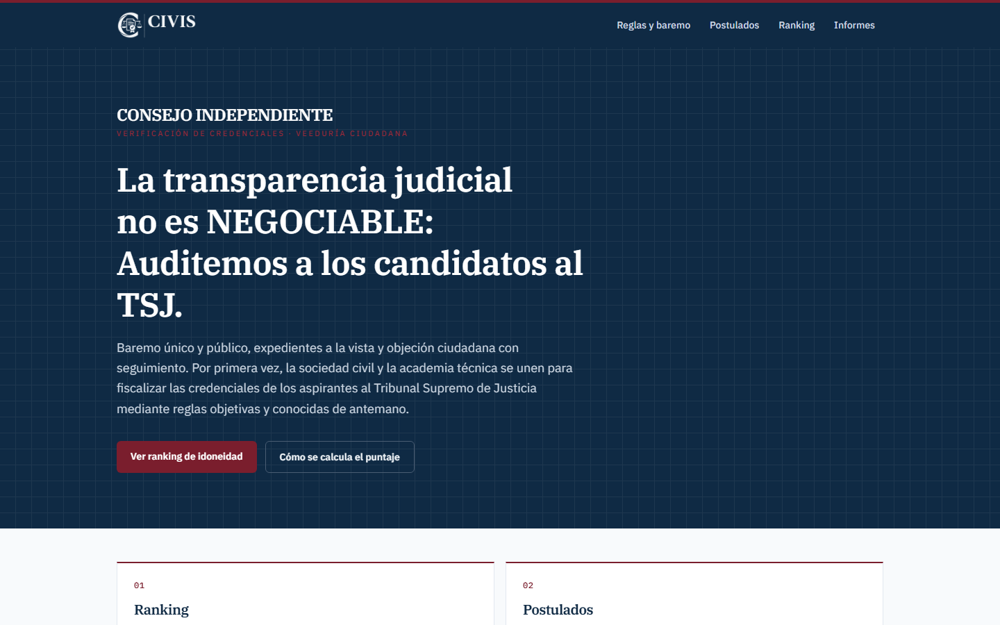
Inicio del sitio público
Reglas y baremo
Explica el marco legal y cómo la Constitución y la LOTSJ se traducen en una calificación objetiva de 100 puntos.
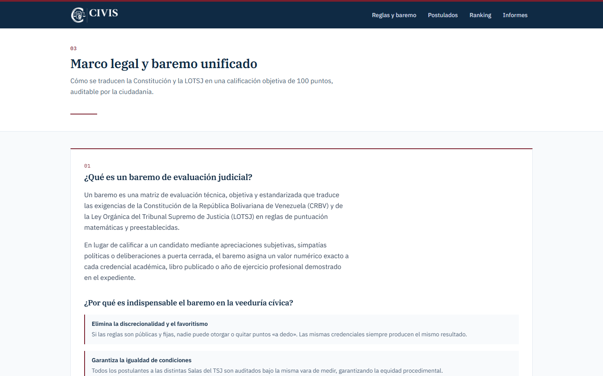
Marco legal y baremo unificado
Postulados y ficha pública
En «Postulados» busque por nombre o filtre por sala y pulse «Filtrar».
Abra un perfil: verá la sala, el resumen profesional, el puntaje total y su desglose por criterio del baremo.
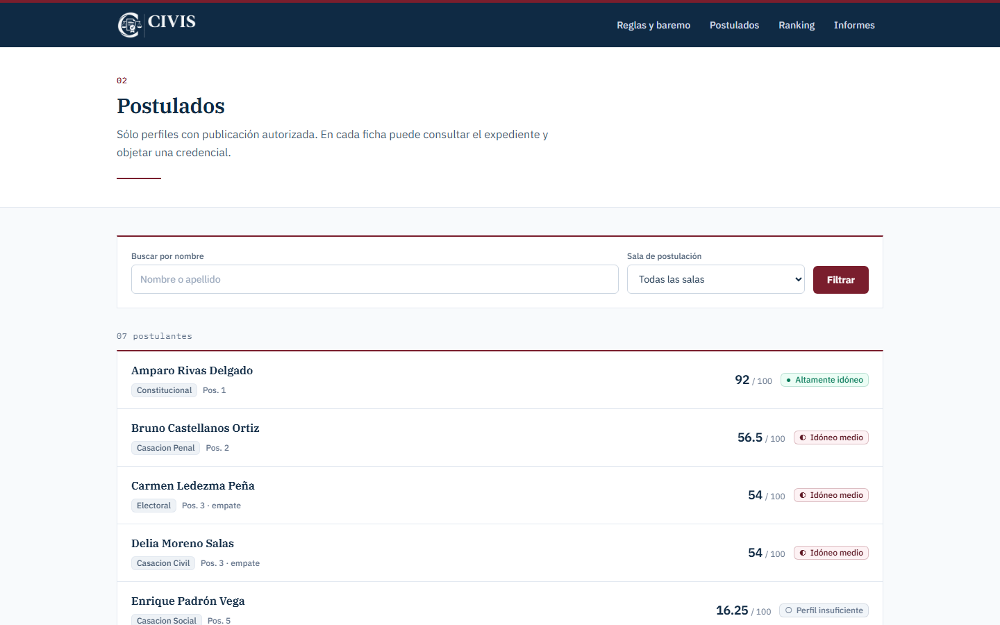
Lista de postulados con publicación autorizada
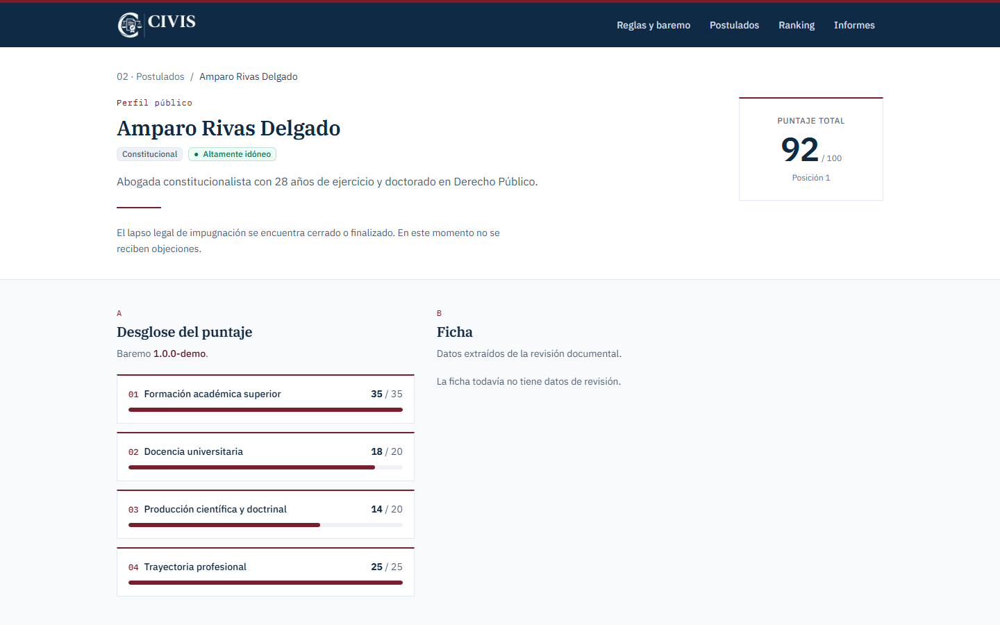
Ficha pública: puntaje y desglose
Ranking e informes
«Ranking» ordena a los postulantes publicados por puntaje; los empates se marcan y quienes quedaron fuera de competencia se listan aparte con su causal. «Informes» reúne los informes finales con su huella SHA-256.
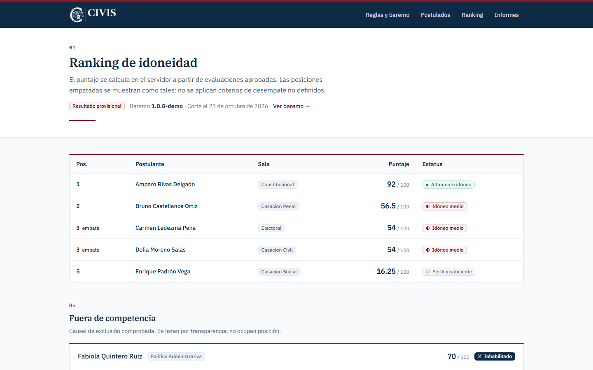
Ranking de idoneidad
Presentar una objeción ciudadana
Sólo es posible mientras el superadministrador mantiene abiertas las objeciones públicas. Entonces la ficha muestra «Objetar candidato».
Pulse «Objetar candidato» en la ficha del postulante.
Complete sus datos (nombre, cédula y correo), las causales, los hechos y las pruebas, y envíe. Al correo le llega un código de seguimiento.
Su identidad nunca se publica ni la ve el postulante.
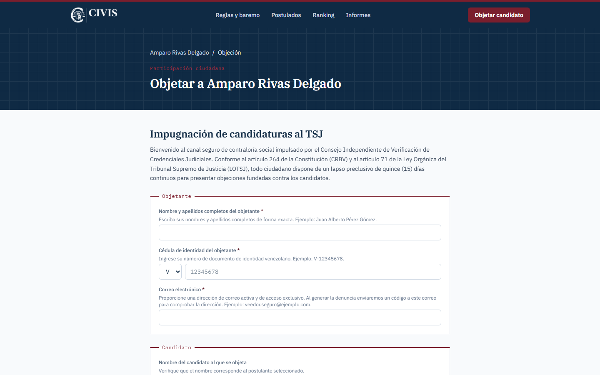
Formulario de objeción ciudadana
Seguimiento
En «Consultar con mi código» escriba el código recibido y pulse «Consultar». Verá si la objeción está recibida, en revisión, resuelta o cerrada.
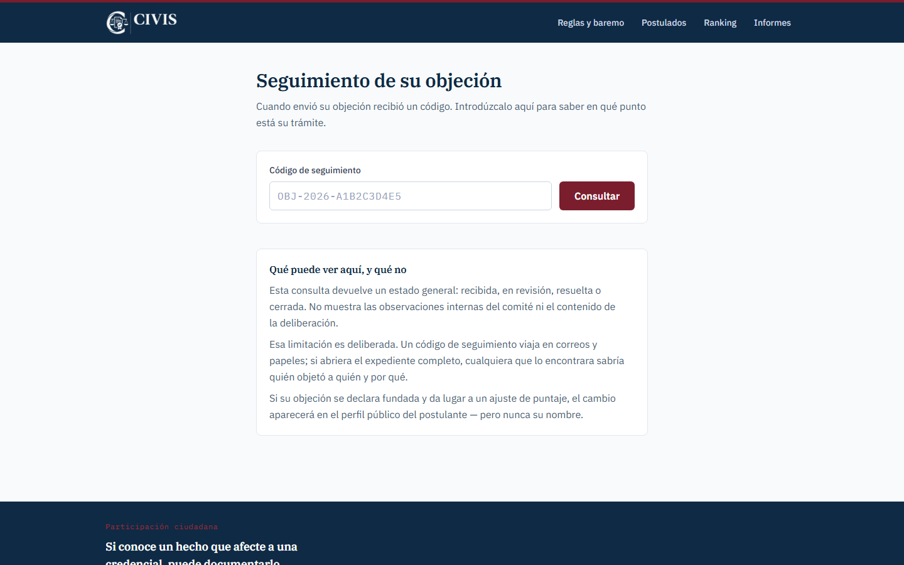
Seguimiento de una objeción con su código
Privacidad. La página «Privacidad» explica qué se publica (nombre, sala, resumen profesional y puntaje) y qué no (cédula, correo, teléfono, notas internas e identidad de quien objeta).
4. Portal del postulante: cuenta, documentos legales y verificación de seguridad
Postulante Entre al portal de postulación y pulse «Créela aquí».
Escriba sus nombres, apellidos, correo y una contraseña de al menos 12 caracteres con mayúscula, minúscula y un número.
Marque las dos casillas obligatorias: Términos y Condiciones y Política de Privacidad. Cada aceptación se guarda por separado, con la versión, la fecha y la hora. Pulse el nombre del documento para leerlo en una ventana.
Espere la marca verde de la verificación de seguridad y pulse «Crear cuenta».
Escriba el código de 6 dígitos que le llega al correo (vence en 10 minutos) y pulse «Confirmar correo».
Ingrese con su correo y contraseña. La verificación de seguridad se pide en cada ingreso.
Crear la cuenta con las dos aceptaciones y la verificación de seguridadLectura de un documento legal sin salir del registro
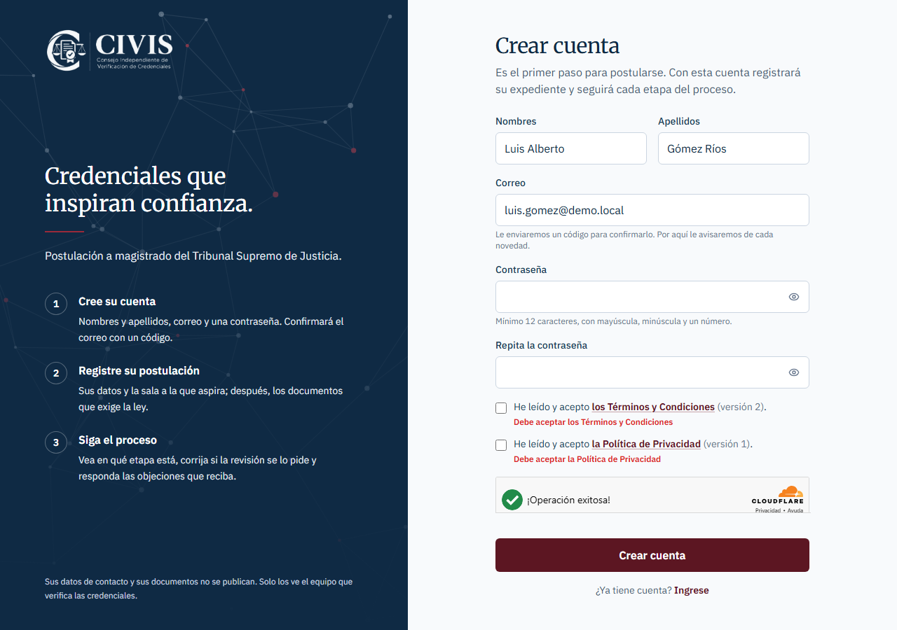
Sin las casillas marcadas, la cuenta no se crea
Versiones nuevas de los documentos
Si se publica una versión nueva, al ingresar verá «Documentos actualizados» con lo que cambió. Léala, marque la casilla y pulse «Aceptar y continuar». Mientras no acepte no puede modificar su postulación, pero sí presentar descargos dentro de su plazo.
Aceptar la versión nueva al ingresar
5. Portal del postulante: postulación, correcciones y descargos
Registrar la postulación y cargar documentos
La primera vez verá «Registrar mi postulación»: cédula, sala a la que aspira y teléfono. Pulse «Registrar postulación»; se crea su expediente (por ejemplo EXP-0009).
Elija cada documento, adjunte el PDF o la imagen y pulse «Guardar documento». Puede hacerlo en varias sesiones.
Pulse «Enviar a revisión» y confirme. Arriba verá siempre su etapa actual.
Si la revisión le pide corregir algo, le llega un correo y verá el motivo en «Mi postulación». Use «Corregir mis datos», sustituya los documentos señalados y pulse «Reenviar a revisión».
Expediente devuelto con el motivo
Responder una objeción admitida
Sólo se entera de una objeción cuando el comité la admite: le llega un correo con el auto de admisión y la denuncia (sin la identidad de quien objetó).
Abra «Objeciones» y la objeción. Verá las causales, los hechos, el auto y el plazo de 3 días continuos, que vence a las 11:59 p. m. del tercer día.
En «Presentar mi descargo» escriba título y descripción, adjunte pruebas si quiere, y pulse «Revisar y presentar» y «Confirmar y presentar».
Cuando el comité decide, recibe el auto de decisión: con lugar (pasa al Consejo) o sin lugar (se ratifica su elegibilidad).
Objeción admitida: auto, plazo y formulario de descargo
6. Panel interno: ingreso y panel de control
Cada persona entra con su correo institucional y su contraseña, y pulsa «Ingresar al sistema». El menú de la izquierda muestra sólo las secciones de su rol. El panel no pide captcha, pero bloquea la cuenta tras varios intentos fallidos.
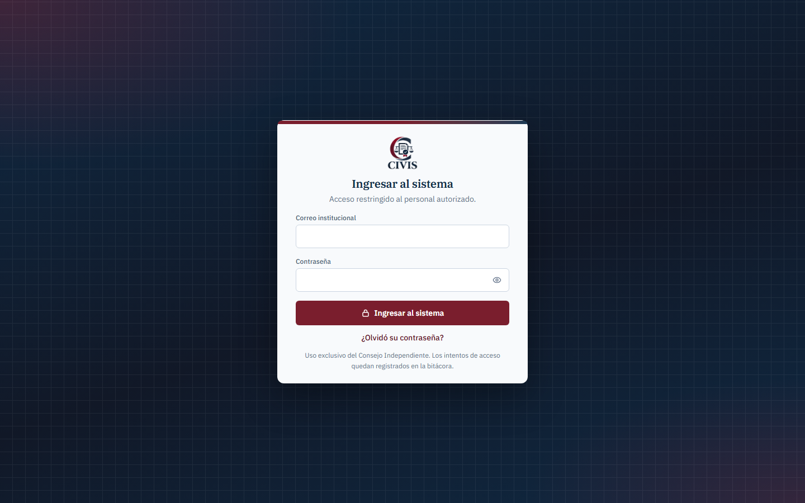
Ingreso al panel interno
El Panel resume el proceso: expedientes registrados, aprobados, objeciones recibidas, expedientes por etapa, evaluaciones por banda y actividad de los últimos 14 días.
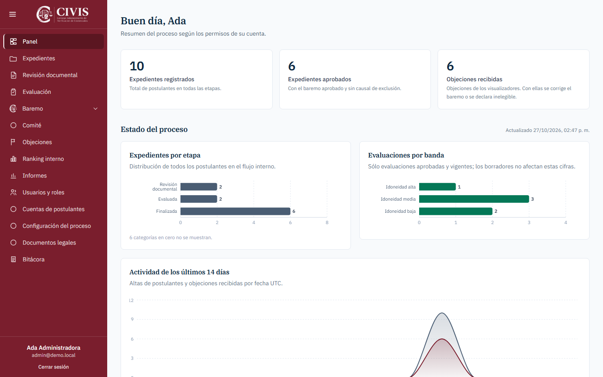
Panel de control
7. Secretaría: expedientes
Secretaría«Expedientes» lista cada expediente con número, postulante, sala, etapa, documentos, objeciones y evaluación. Filtre por nombre, cédula o número, o por etapa.
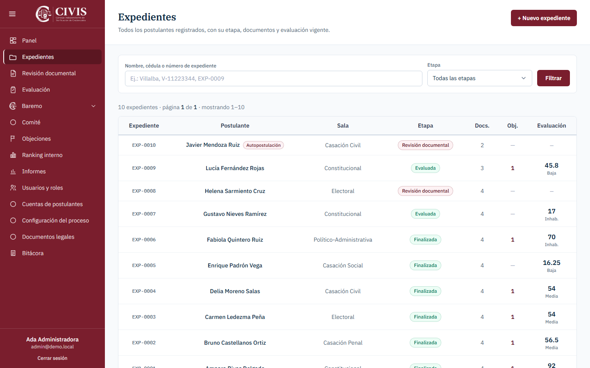
Lista de expedientes
Registrar un postulante sin cuenta
Pulse «Nuevo expediente», complete nombres, apellidos, cédula vigente y sala, y pulse «Registrar expediente». Sólo es posible con las postulaciones abiertas.
A la derecha está el listado de recaudos por bloque. Elija un documento, adjunte el archivo y pulse «Guardar documento».
Pulse «Enviar a revisión» y confirme.
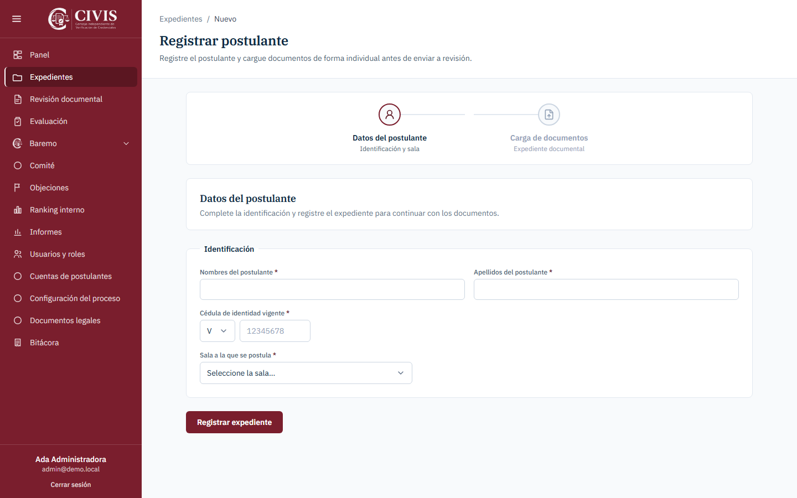
Registrar postulante
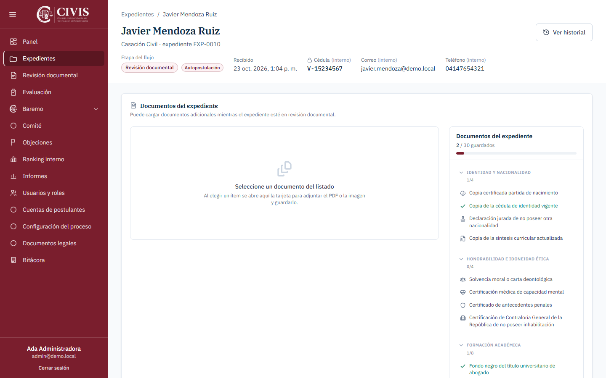
Ficha del expediente con sus documentos
Los expedientes que crea el propio postulante desde el portal aparecen con la etiqueta «Autopostulación». Si el postulante no tiene cuenta y le admiten una objeción, la secretaría recibe la notificación y carga el descargo desde la ficha, en «Objeciones y descargos».
Cargar el descargo de un postulante sin cuenta
8. Revisión documental
Revisor La cola lista los expedientes enviados a revisión. Pulse el postulante para abrir sus documentos.
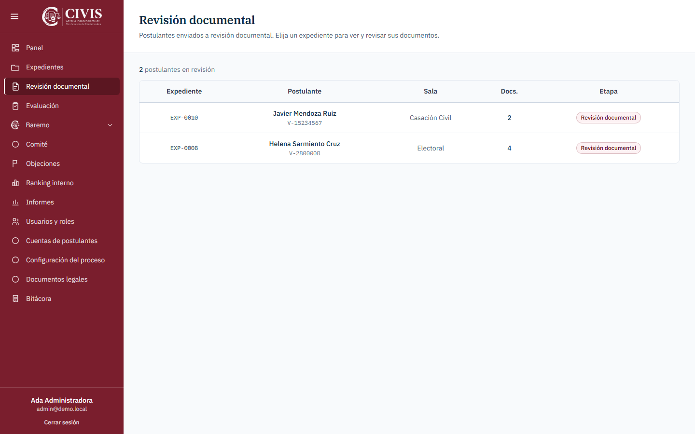
Cola de revisión documental
Elija un documento del listado de la derecha: se muestra el archivo y el formulario de ese tipo de documento.
Complete los datos que se leen en el documento y pulse «Verificado».
Con todos verificados se habilita «Enviar al evaluador». Si algo falta o está mal, pulse «Devolver para corrección», escriba el motivo (mínimo 10 caracteres) y confirme: lo recibe el postulante por correo.
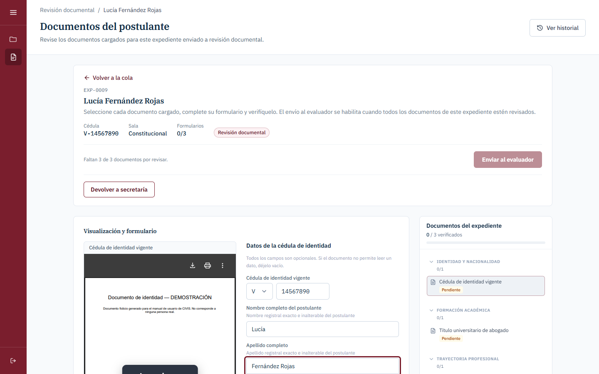
Verificar un documento con su formulario
Un expediente, un revisor. Mientras alguien lo tiene abierto, el expediente queda reservado para esa persona; se libera solo tras 15 minutos sin actividad.
9. Evaluación: elegibilidad y baremo
Evaluador La evaluación tiene dos pasos.
Paso 1: elegibilidad
En «Evaluación», pestaña «Pendientes por evaluar», abra el postulante.
Revise los documentos y marque en la lista de verificación los requisitos que el expediente acredita.
Escriba la fundamentación y pulse «Votar elegible» o «Votar inelegible». Ante un conflicto de interés, use la recusación, que exige motivo.
El voto es ciego y el veredicto se cierra al alcanzar el quórum. Los casos sin acuerdo pasan a «Escaladas», que resuelve la administración.
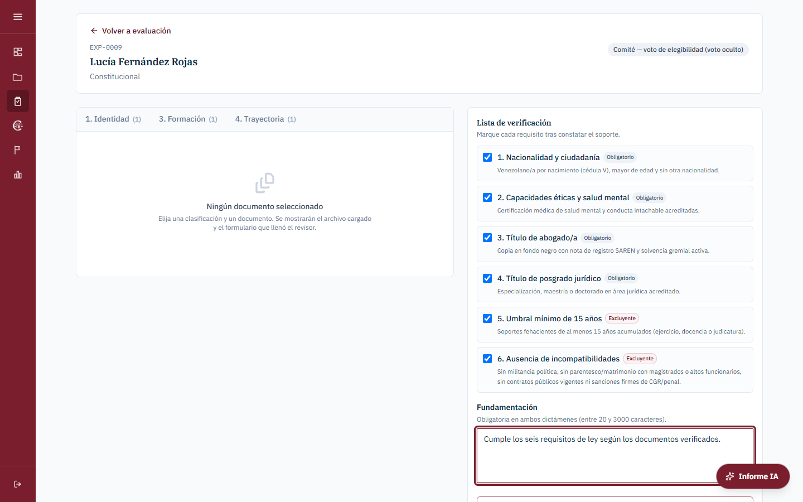
Voto de elegibilidad con lista de verificación
Paso 2: baremo
En «Baremo» → «Postulados» aparecen los declarados elegibles. «Baremo activo» muestra los criterios vigentes en sólo lectura.
Pulse «Aplicar baremo». En cada criterio marque el rango que aplica y escriba el resultado del postulante y el puntaje, dentro del mínimo y el máximo del rango.
Pulse «Enviar nota al comité». El puntaje del postulante es el promedio y lo calcula el servidor.
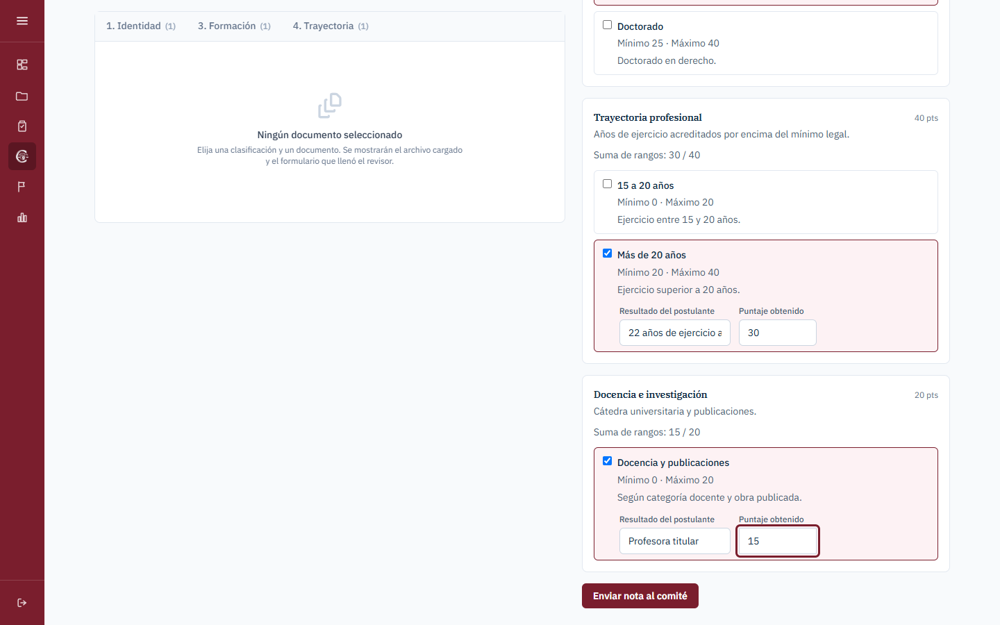
Aplicar el baremo
10. Ranking interno y ranking público
SuperadministradorAdministradorEvaluadorVisualizador«Ranking interno» ordena a los postulantes con baremo consolidado. Los empates se marcan. «Ver opiniones» abre la ficha con los comentarios de los visualizadores.
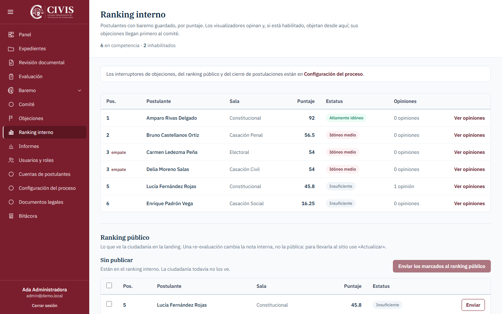
Ranking interno y bloque «Ranking público»
Publicar en el sitio
Enviar al ranking público (uno o los marcados): sólo el superadministrador. Lo que no se envía, la ciudadanía no lo ve.
Actualizar en el ranking público: lleva al sitio la nota re-evaluada de un postulante ya publicado. El superadministrador siempre; el administrador y los evaluadores sólo si el interruptor está activo.
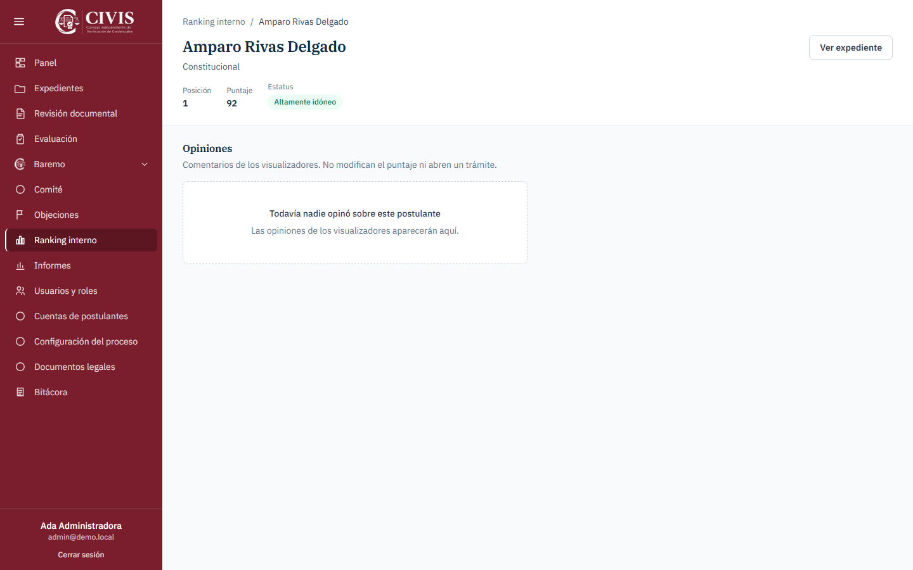
Ficha del postulante en el ranking interno
11. Visualizadores: opinar y objetar
Visualizador Entra directo al ranking interno. Consulta los expedientes en sólo lectura.
Opinar: desde la ficha del postulante, escriba su opinión (mínimo 10 caracteres) y pulse «Publicar opinión». No cambia el puntaje y no se puede borrar.
Objetar: sólo con el interruptor «Objeciones de los visualizadores» activo. Pulse «Objetar», marque las causales, describa los hechos (mínimo 50 caracteres), pegue el enlace a las pruebas y confirme. Recibe el acuse con el PDF de la denuncia.
Formulario de objeción del visualizador
12. Comité de objeciones
Comité Toda objeción, ciudadana o de un visualizador, llega primero a «Comité». Durante el lapso y la admisión sólo el comité la ve.
Pestaña
Qué contiene
Por admitir
Objeciones recibidas en el lapso.
En descargo
Admitidas y notificadas; cuánto le queda al postulado para responder.
Por decidir
Con descargo, o «sin descargos» si venció el plazo. Corre la comprobación.
Decididas
Inadmitidas, con lugar y sin lugar.
Bandeja del comité
Admitir o inadmitir. Abra la objeción (verá aparte quién objeta, dato reservado), agregue si quiere consideraciones y confirme. Se dicta el auto: la admisión se notifica al postulado con la denuncia y abre su plazo de descargo; la inadmisión sólo a quien objetó.
Descargo. El postulado responde en 3 días continuos. Si vence sin respuesta, el sistema la marca «Sin descargos».
Comprobación y decisión. Hasta 5 días para pedir informes. Luego pulse «Con lugar» o «Sin lugar» y confirme. Se dicta el auto y se notifica al postulado y a quien objetó.
Admisión con confirmaciónDecisión final
Confidencialidad. El postulante y la secretaría nunca ven quién objetó, ni en los autos ni en la copia de la denuncia. Sólo el comité y el Consejo ven esa identidad, y cada consulta queda en la bitácora.
13. Consejo: objeciones declaradas con lugar
EvaluadorAdministrador En «Objeciones» sólo aparecen las que el comité declaró con lugar, con el descargo, las consideraciones del comité y el auto en PDF.
El Consejo declara la inelegibilidad (el postulado sale del ranking de inmediato) o ajusta el puntaje en una ronda de objeción con el baremo congelado.
En la ronda, cada evaluador vuelve a puntuar, se abstiene o vota inelegible con motivación.
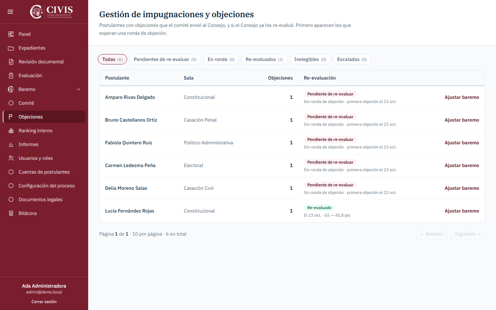
Gestión de objeciones del ConsejoEl Consejo ve la objeción, el descargo y el auto con lugar
14. Informes finales
Superadministrador En «Informes», «Nuevo borrador» genera un informe a partir de las evaluaciones aprobadas. Al aprobarlo, el informe lleva su huella SHA-256 y se publica en el sitio, donde cualquiera puede comprobar que el documento consultado es exactamente el aprobado.
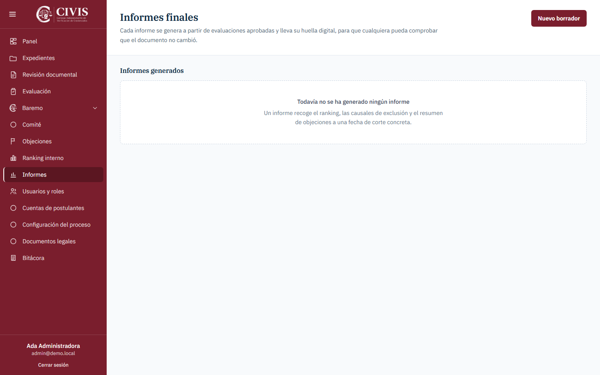
Informes finales
15. Administración: usuarios, Consejo y cuentas de postulantes
SuperadministradorAdministrador
Usuarios y roles
Pulse «Crear usuario», escriba nombre y correo institucional y marque el rol.
El sistema muestra una contraseña temporal una sola vez: entréguela por un canal seguro. En su primer ingreso, la persona debe cambiarla.
«Cambiar rol» y el estado (activo o suspendido) exigen un motivo, que queda registrado.
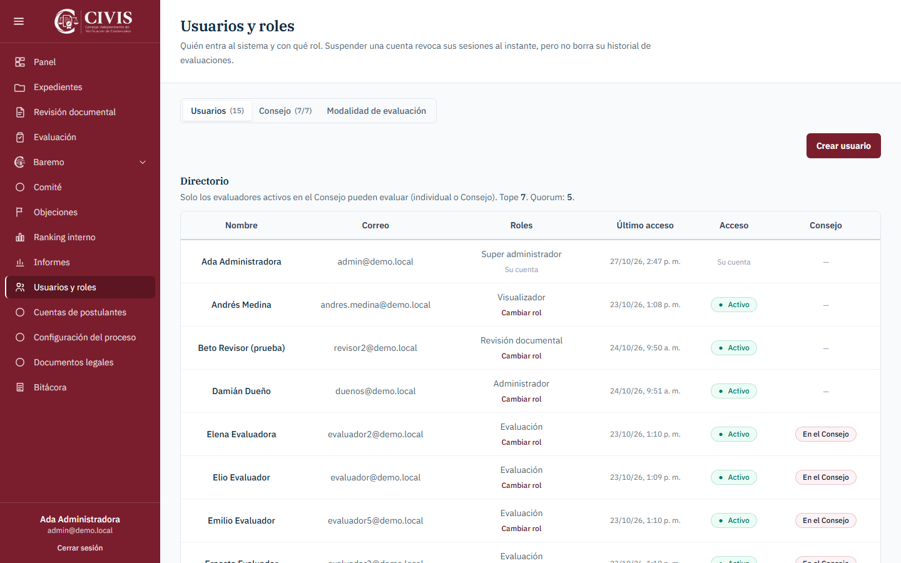
Usuarios y roles
El Consejo
En la pestaña «Consejo» se ve cuántos puestos están ocupados. «Agregar al Consejo» elige un evaluador activo; «Sacar del Consejo» pide el motivo.
Pestaña «Consejo»
Cuentas de postulantes
Las cuentas del portal se consultan en «Cuentas de postulantes»: búsqueda por nombre, correo o cédula, estado y enlace al expediente. Desde ahí se suspenden o reactivan. Nunca cambian de rol.
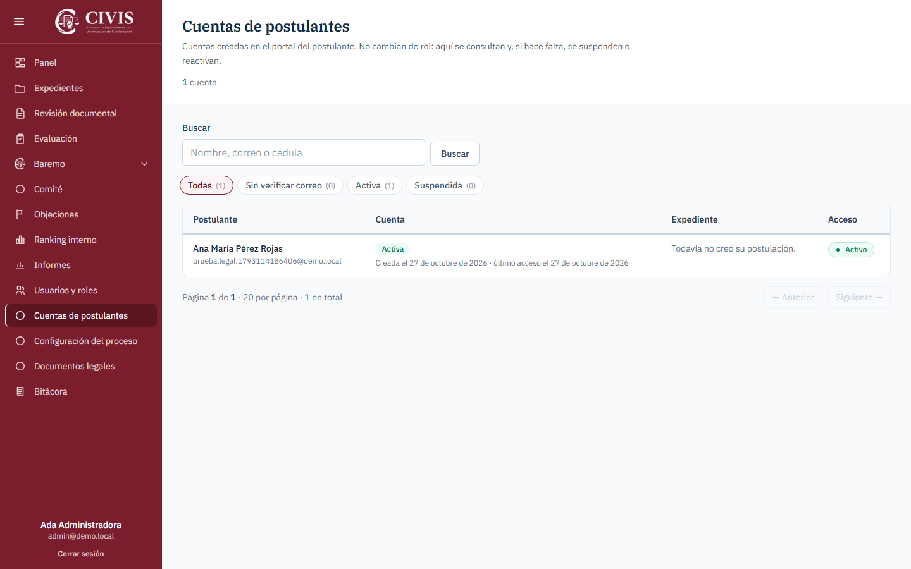
Cuentas de postulantes
16. Superadministración: configuración, calendario, baremo, documentos legales y bitácora
Superadministrador
Configuración del proceso
Interruptor
Qué hace
Postulaciones cerradas
Ni la secretaría ni el portal registran expedientes ni hacen un primer envío. Pide confirmación.
Objeciones de los visualizadores
Abre o cierra el lapso para los visualizadores.
Objeciones públicas en la landing
Abre las objeciones a la ciudadanía en el sitio público.
«Actualizar en el ranking público» para admin y evaluadores
Les permite llevar al sitio la nota re-evaluada de un postulante ya publicado.
Configuración del proceso
Calendario y plazos, en tres pasos
Inicio del lapso: automático (día hábil siguiente al cierre de postulaciones) o una fecha elegida en el calendario, que atenúa los fines de semana y subraya los feriados.
Duración de cada etapa con − y +; «Usar los plazos de ley» devuelve los valores legales. El lapso cuenta días Hábiles o Continuos.
Feriados: un toque en el calendario marca o quita el día; «Feriados nacionales» restablece la lista oficial.
La vista previa «Así queda el calendario» se recalcula al momento. Pulse «Guardar configuración».
Calendario del proceso en tres pasos
Baremo
En «Baremo» → «Crear baremo» se definen los criterios, sus rangos y puntajes (el total debe sumar 100). Sólo puede haber un baremo activo; «Activar» lo pone en uso.
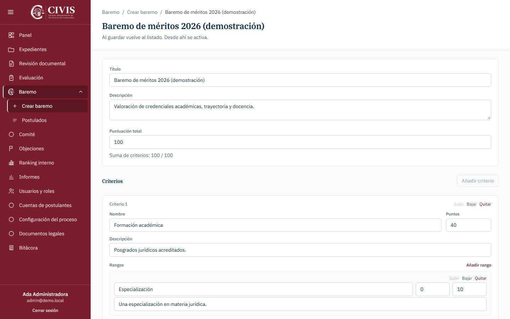
Edición de un baremo
Documentos legales
En «Documentos legales», cada tarjeta muestra la versión vigente, quién la publicó, las aceptaciones, la huella y el historial. «Ver vigente» la abre.
«Actualizar (nueva versión)» crea un borrador con el texto vigente. Edite en «Escribir», revise en «Vista previa» y escriba el resumen de cambios.
«Publicar versión N» → «Confirmar publicación». La versión anterior queda «Reemplazada» y los postulantes con cuenta deben aceptar la nueva al ingresar.
Documentos legalesBorrador de una versión nueva
Bitácora
Registro inmutable de toda operación sensible: ingresos, cambios de rol, votos, autos, publicaciones, aceptaciones de documentos legales y consultas de datos reservados. Se filtra por tipo de acción y persona, y se exporta a CSV.
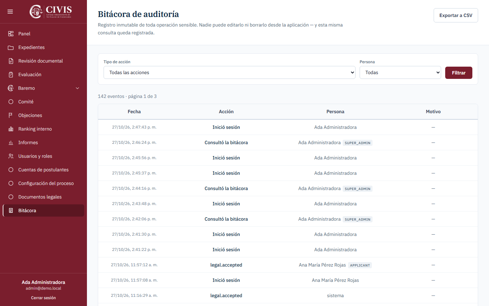
Bitácora de auditoría
17. Recuperar la contraseña
Funciona igual en el portal del postulante y en el panel interno.
En la pantalla de ingreso, pulse «¿Olvidó su contraseña?».
Escriba el correo de su cuenta y pulse «Enviarme un código».
Escriba el código de 6 dígitos (vence en 10 minutos) y su contraseña nueva dos veces.
Pulse «Restablecer contraseña» e ingrese con la nueva.
Al restablecerla se cierran todas sus sesiones abiertas, se quita el bloqueo por intentos fallidos y le llega un correo de aviso.
Pedir el código
18. Quién puede hacer qué
Rol
Dónde entra
Qué hace
Ciudadanía
Sitio público
Consultar reglas, perfiles, ranking e informes; objetar con el lapso abierto y seguir su objeción con un código.
Postulante
Portal del postulante
Crear cuenta aceptando los Términos y la Política de Privacidad, aceptar sus versiones nuevas, postularse, cargar y corregir documentos, seguir su etapa y responder objeciones admitidas.
Secretaría
Panel
Crear expedientes (con postulaciones abiertas), corregirlos y cargar descargos de postulantes sin cuenta.
Revisor
Panel
Verificar documentos; enviar a evaluación o devolver para corrección.
Evaluador (Consejo)
Panel
Votar la elegibilidad, aplicar el baremo y, ante una objeción con lugar, declarar la inelegibilidad o ajustar el puntaje.
Comité
Panel
Admitir o inadmitir objeciones, esperar el descargo, comprobar y decidir con lugar o sin lugar. Cada acto dicta un auto.
Visualizador
Panel
Consultar, opinar y, con el lapso abierto, objetar.
Administrador
Panel
Usuarios, Consejo, cuentas de postulantes, escaladas de evaluación y objeciones del Consejo; actualizar el ranking público si está habilitado.
Superadministrador
Panel
Todo lo anterior, más configuración del proceso y calendario, baremo, publicación en el ranking público, informes, documentos legales y bitácora.